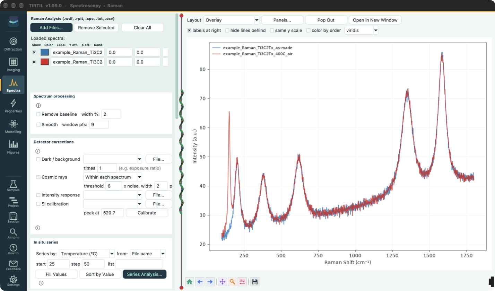
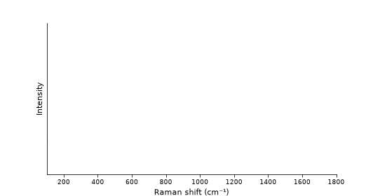

Spectra
Raman
Bonds, oxidation and carbon.

Steps
Add Files...Add spectra (.txt, .csv, .wdf, .rpit).Calibrateon Si (520.7 cm⁻¹) if needed.Find PeaksFind the peaks and fit them (Lorentzian or Voigt).Match Peaks to PhasesMatch to phases: Ti3C2Tx modes, TiO2 anatase and rutile, carbon D and G.Series Analysis...Series analysis: I(D)/I(G) or a peak position against temperature or time.
How it works

Worked example
D at 1350 and G at 1585 cm⁻¹ with I(D)/I(G) = 0.78 is disordered carbon. A new peak at 151 cm⁻¹ is the anatase Eg mode: the MXene has started to oxidise.
In TIRTIL: How to (⌘/) › Try It With Example Data loads this example.